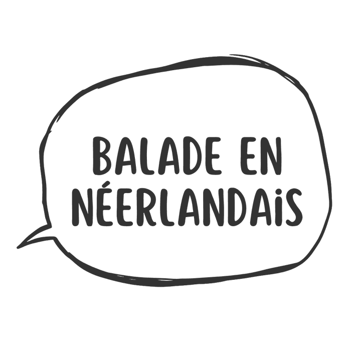
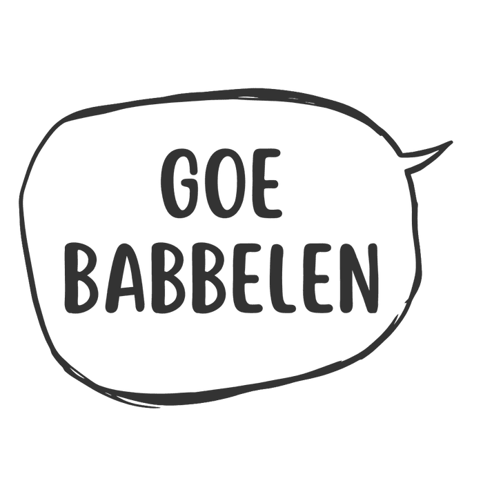
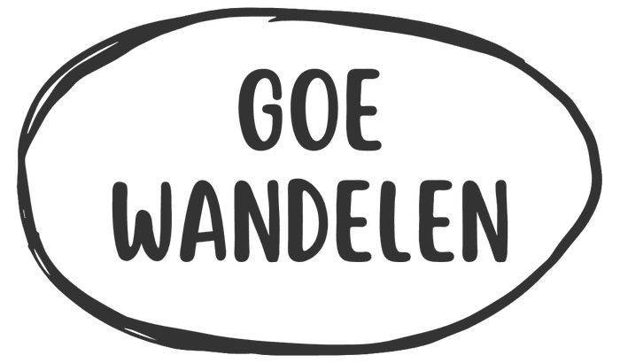

DAS GOE — Balades en néerlandais
Ose (enfin) parler néerlandais
Sans stress, en pleine nature.
Tu comprends le néerlandais, mais au moment de répondre, ton cerveau se fige ?
C'est totalement normal. Les cours traditionnels stimulent la peur, le stress bloque ta fluidité — et tu abandonnes. Pour libérer ta parole, il faut sortir de la classe.
Balades en néerlandais
Oublie l'angoisse des listes de vocabulaire. Bienvenue chez DAS GOE : la méthode de la marche active.
En tant que coach en gestion du stress, je le constate à chaque balade : bouger en plein air fait retomber la pression et libère la parole. Dans la nature de Viroinval, tu pratiques la langue de manière totalement naturelle :
- Zéro table, zéro chaise, zéro examen
Une discussion fluide au rythme de tes pas.
- Un cadre 100% sécurisant
Pas de jugements, nous sommes tous là pour progresser.
- Des déclencheurs spontanés
La nature nous offre les sujets, je guide tes échanges en douceur.
Le néerlandais ne mord pas. Il grogne un peu, c'est tout.

Goe babbelen
Balade linguistique en néerlandais, 2 heures, groupe de 6 personnes maximum, à Viroinval.
Balade en néerlandais
On marche, on déconnecte, on papote. La nature évacue le stress, les mots viennent tout seuls. Tu apprends sans même t'en rendre compte.
35€ / balade
Je réserve ma balade via WhatsAppPour l'instant, tout passe par WhatsApp. Tu m'écris en français, en néerlandais ou un mélange des deux : je te réponds moi-même et on cherche ensemble ce qui te va.

Goe wandelen
Infos pratiques & prochaine session
Maximum 6 participants pour garantir ton espace de parole bienveillant.
Garantie DAS GOE — « Zéro Risque »
Si après 1 heure de marche, tu sens que tu n'es pas à l'aise ou que cette formule ne te convient pas, dis-le-moi. Je te rembourse l'inscription immédiatement. Sur place. Sans poser de questions. Ton bien-être passe avant tout.
J'ose enfin parler néerlandais
Ce qu'ils en disent
« Très chouette soirée organisée par Erika. Un moment de convivialité pour discuter en néerlandais autour du feu en toute bienveillance et avec zéro jugement. »
Michaël — recommande
« Un accueil chaleureux, une activité où le respect de chacun est primordial, chacun vient comme il est et découvre ou approfondit son lien avec la nature, avec les autres et avec lui-même. Une très belle expérience. »
Inès — recommande
★★★★★
« Erika hielp mij bij het studeren voor mijn examens. Ze had een leuke manier van leren studeren waardoor ik meer interesse had in mijn cursus en bood ook veel structuur aan. Ze had verschillende visuele trucjes, dit maakte het voor mij makkelijker om bepaalde zaken te onthouden. Dankzij haar werd mijn buisvak een impressionant cijfer op mijn rapport. »
Amber
Une question ?
Je comprends un peu le néerlandais, mais je n'ose pas du tout parler. Est-ce que cette balade est vraiment pour moi ?
C'est exactement pour toi ! La grande majorité des participants ont ce « dictionnaire bloqué dans la tête » par peur du jugement. Pas de prof sévère ici : on marche, on fait des erreurs, on en rigole.
Quel est le niveau minimum requis pour participer ?
Si tu comprends « Hoe gaat het? » (Comment ça va ?) ou « Het is mooi weer » (Il fait beau), tu as largement le niveau ! Même avec des bases scolaires lointaines, tu es le bienvenu(e).
Que se passe-t-il si je ne trouve plus mes mots pendant la balade ?
Rien de grave ! On parle avec les mains, les pieds, et s'il le faut, un mot en français. Je suis là pour te souffler le mot manquant, sans aucune pression.
Et s'il pleut ? La balade est-elle annulée ?
« Er bestaat geen slecht weer, alleen slechte kleren » (Il n'y a pas de mauvais temps, juste de mauvais vêtements) ! Sauf tempête extrême, la balade est maintenue. Prends une veste imperméable et de bonnes chaussures, et c'est parti !
Comment fonctionne la garantie « Zéro Risque » ?
C'est basé sur la confiance : si après 1 heure, tu ne te sens pas à l'aise, tu me le dis discrètement. Je te rembourse l'inscription sur-le-champ. Ton bien-être passe avant tout.
Pourquoi y a-t-il un maximum de 6 participants ?
Pour que la balade reste intime et conviviale, que tu te sentes en totale sécurité — et que chacun ait un vrai temps de parole, avec un accompagnement individuel et chaleureux.
Tu n'es pas dans la région de Viroinval, ou tu préfères démarrer depuis chez toi ?
Je donne aussi des cours en ligne individuels, même philosophie, en visio.